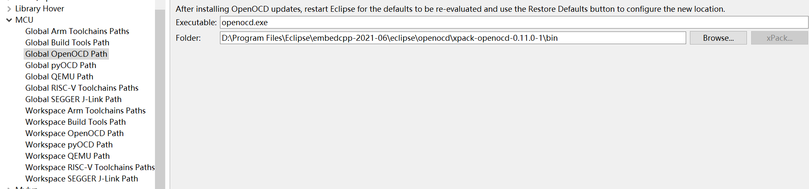

windows下eclipse调试记录

1.下载安装eclipse
下载地址: https://www.eclipse.org/downloads/
下载后双击安装就行,配置如下:
选择安装的jdk版本和要安装的路径,点击install安装.
3. 配置编译环境
1.下载windows环境下编译linux的工具包
工具地址：https://sourceforge.net/projects/msys2/files/Base/x86_64/
安装步骤: https://www.msys2.org/
打开MSYS2并安装make，输入命令：
pacman -S make后回车，并根据提示直到安装完成，当前我的安装路径是C盘。

安装成功后会在相应的usr->bin路径下看到安装的工具。
2.打开eclipse，选择标签window-> Preferences，操作如下：
打开之后如下现象：
3.配置编译开发编译和调试工具的相关路径
主要配置的选项如下
- Build Tools Path：是编译工具，可以根据需要选择，此处选择的是make工具；
- OpenOcd Path：是一个开源的片上调试器，旨在提供针对嵌入式设备的调试、系统编程和边界扫描功能；
- ToolsChains Path：构建工具，根据硬件选择不同的硬件选项工具;
1）配置Build Tools Path
添加build
Tools是编译工具路径，就是最初安装没有sys2的路径，此处我的路径是:C:\msys64\usr\bin。

配置完成后点击Apply，点击Apply and Close。
2）配置OpenOcd Path
- 选择的自己要安装的版本，下载，配置相关环境变量openocd
下载地址:Releases · xpack-dev-tools/openocd-xpack · GitHub
- 下载后，解压，在系统环境变量配置相关的安装路径，这样在windows的终端命令行就可以使用openocd了
D:Program FilesEclipseembedcpp-2021-06eclipseopenocdxpack-openocd-0.11.0-1bin
eclipse配置openocd的开发路径
配置完成后点击Apply，点击Apply and Close。
2）配置Riscv ToolsChains Path
配置完成后点击Apply，点击Apply and Close。
4.配置build编译标签
配置build的选项
- 右键工程，选择
Properties->C/C++Build->Manage Configuration
- 在
Manage Configuration下新建一个配置标签，这样以后就不用再进行配置，直接选择标签进行编译就行了。
- 点击OK，退出界面，再点击OK退出界面。
- 选择新建的标签
- 配置该标签的
Builder Settings，其中Build directory选择你要编译的工程，此处选的是bl602_demo_event。
- 配置Behavior。
其中Build arguments:填写为CONFIG_CHIP_NAME=BL602 CONFIG_LINK_ROM=1 -j4
- 配置Refresh Policy
- 配置完成后点击Apply，点击Apply and Close。
- 配置完成后，在主页面的小锤子下面就有自己配置的标签了，就可以选择自己需要的标签进行编译了。
5.配置debug调试环境
右键工程，选择Debug As >Debug Configurations...操作界面如下：
打开后新建一个调试平台，点击New launch configuration，新建debug标签，然后配置，请按照下面所示图进行配置，大致如下：
main界面配置
Debugger配置
- openocd工具相关路径（选择上面安装的openocd路径）
- gdb等协议的端口号
- openocd配置文件和调试硬件配置相关文件（
-f tools/debug/openocd_cfg/if_bflb_link_DVK.cfg和-f tools/debug/602/tgt_602_xip.cfg） - gdb调试工具（
${project_loc}\toolchain\riscv\MSYS\bin\riscv64-unknown-elf-gdb.exe） - 调试硬件初始化文件配置（
-x tools/debug/602/602.init）
Startup配置
Common配置
SVD Path配置
配置完成后点击Apply。
6.debug
- 按钮
Resume（ F8）一下，如果Debug congfiguration中有配置,可以看到程序停在 bfl_main() 主函数处，此时可以点击下图中的3个按钮 - 按钮
Suspend是暂停调试，当想让调试，查看代码某个数据信息时，可以点击该按钮，暂停调试； - 按钮
Terminate（Ctrl + F2），点击此按钮可以终止退出调试； - 按钮
Step Into（F5） 单步执行，遇到子函数就进入并且继续单步执行； - 按钮
Step Over（F6）在单步执行时，在函数内遇到子函数时不会进入子函数内单步执行，而是将子函数整个执行完在停止，也就是把子函数整个作为一步； - 按钮
Step Return（F7）在单步执行到子函数内时，用Step Return就可以执行完子函数余下部分，并返回上一层函数。
2号功能区
Registers：该标签是对cpu通用寄存器的显示，pc，sp等寄存器；

3号功能介绍，标签从左向右
- 标签
Breakp是对断点的显示，全局有多少断点都会显示在此处；
- 标签
Variable是对环境变量的显示，当调试暂停时，你的鼠标暂停在某变量时，该标签便会显示相关参数的数据信息；

- 标签
Express可以添加相关想要查看到变量，该标签添加完变量时，变量的信息会实时的变化；

4号功能区
Memory该标签是对硬件内存的查看，可以添加相关硬件地址，可以看到该地区数据的变化。